Bandera de la Policía Nacional
Es el emblema oficial de la Institución policial que representa un homenaje a los hombres y mujeres que la han forjado y que de forma valerosa realizan la sagrada misión de salvaguardar a los ciudadanos de la nación, exaltando los sentimientos e impulsándolos al sacrificio; lo que la hace merecedora de respeto y de recibir los honores correspondientes.
Descripción:
Está constituida por la bandera de la República Dominicana, dividida en cuatro (4) pabellones separados por una cruz de color blanco, sin el escudo de arma de la República en el centro, con tres (3) franjas horizontales; la primera de color azul, colocada en el extremo derecho de los cuatro pabellones, el segundo de color blanco y el tercero de color verde, ambos de igual proporción y unidas horizontalmente en la parte inferior de los pabellones. De un metro con treinta y cinco (1.35) centímetros de largo, por un metro con diez (1.10) centímetros de ancho.
Escudo Emblemático Institucional
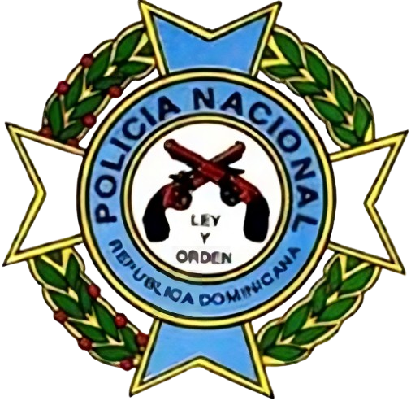Representa la identidad corporativa de la Institución, simbolizado por la Cruz de Malta, en la que se destaca el conjunto de rasgos y condiciones objetivas de la esencia social Institucional, dándole a la misma un registro visual que ofrece un valor diferenciador ante las demás instituciones del Estado y cuerpos policiales del mundo. La Cruz de Malta, simboliza la Orden de los Caballeros de Malta, y en su descripción se destaca, dos brazos verticales en color verde (aguamarina) y dos horizontales en blanco, envuelta en un ramo de laurel y otro de palma en color verde del lado izquierdo y derecho del observador respectivamente, según lo dispuesto en el Escudo Nacional, con dos círculos concéntricos color verde (aguamarina), con un radio de aproximadamente una pulgada, con la inscripción “POLICÍA NACIONAL” en su parte superior interna y en la parte inferior “REPÚBLICA DOMINICANA”, en el centro de ambos círculos, sobre un fondo blanco, dos revólveres tipo mosquetón (emblema que representa las Armas de la Policía Nacional), y debajo de los revólveres el lema de la institución “LEY Y ORDEN”, en letras negras.
Logo Institucional de la Policía Nacional

Constituye el símbolo distintivo de la Institución a nivel nacional e internacional; en su descripción se destaca su forma de triángulo isósceles ovalado, de 4 1/2 pulgadas de largo y 3 1/4 pulgadas de ancho; en su interior otro triángulo más pequeño color azul celeste, de 2 1/4 pulgadas de largo y 2 pulgadas de ancho, conteniendo en su centro el escudo emblemático Institucional; el espacio comprendido entre los dos triángulos tiene el color azul marino, y en la parte superior lleva bordado el nombre de “POLICÍA NACIONAL” en letras color blanco; bordeado en la parte inferior desde su lado derecho hacia el izquierdo con la inscripción de “REPÚBLICA DOMINICANA”; el borde exterior del triángulo superior está bordado por un hilo color amarillo oscuro.
Himno de la Policía Nacional
Es la composición poética que rememora el sentido de responsabilidad, la esencia del quehacer policial y valores inherentes que cada policía debe asumir frente al ejercicio de su carrera, al igual que otras grandes virtudes denotadas en la letra de esta composición. Su música es autoría del Profesor Capitán Ángel Peña y Peña, P.N., y las letras del Capitán Dr. Rafael M. Pérez Acosta, P.N.
Notas del Himno de la Policía Nacional
I
LA POLICÍA NACIONAL ES FUERZA, LUZ DE PAZ Y DE CONCORDIA, QUE SOBRE CUMBRE DE MORAL SE EMPINA AL CIELO EN UNA AFÁN DE GLORIA.
II
CON NOBLE ORGULLO Y CORAZÓN Y LA EXPRESIÓN DE FIRME RECTITUD, ALZA SU VOZ DE ORDEN, LEY Y RAZÓN Y AL VICIO EXTIRPA EN BIEN DE LA VIRTU
III
DONDE SURGEN MOTIVOS DE ALARMA Y HAY PELIGRO, MALDAD Y ASECHANZA, RAUDO CORRE IMPONIENDO LA CALMA EL AGENTE QUE INSPIRA CONFIANZA,
IV
Y AUNQUE NAZCAN BORRASCAS DE INSIDIAS MANCILLANDO SU HONRA Y HONOR, SEGUIRÁ SU DESVELO Y VIGILIA POR SU PUEBLO, SU PATRIA Y PENDÓN.
Escuchar aquíLema de la Policía Nacional
“LEY Y ORDEN”
Eslogan de la Policía Nacional
“TODO POR LA PATRIA”
Teniente General
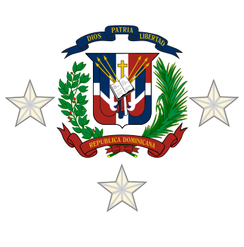Simbolizada por el Escudo Nacional en metal, con 3 estrellas color plateado de cinco puntas; dos colocadas lateralmente, de forma que toquen el centro del ramo de laurel y de palma del escudo, y la otra colocada debajo, de forma que la punta superior toque el centro del lazo donde se unen los ramos de laurel y palma.
Mayor General
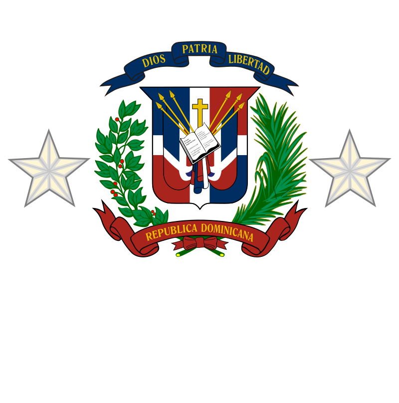Representada por el Escudo Nacional en metal, con dos estrellas color plateado, colocadas en ambos lados del escudo, de forma que toquen el centro del ramo de laurel y palma.
General de Brigada
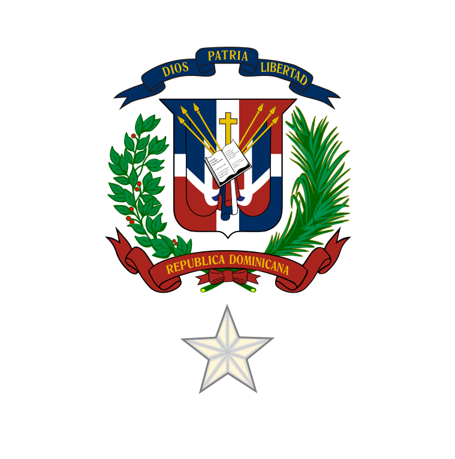Consiste en el Escudo Nacional en metal, con una estrella color plateado de cinco puntas, colocada debajo del Escudo, de forma que la punta superior toque el centro del lazo donde se unen los ramos de palma y de laurel.
Coronel
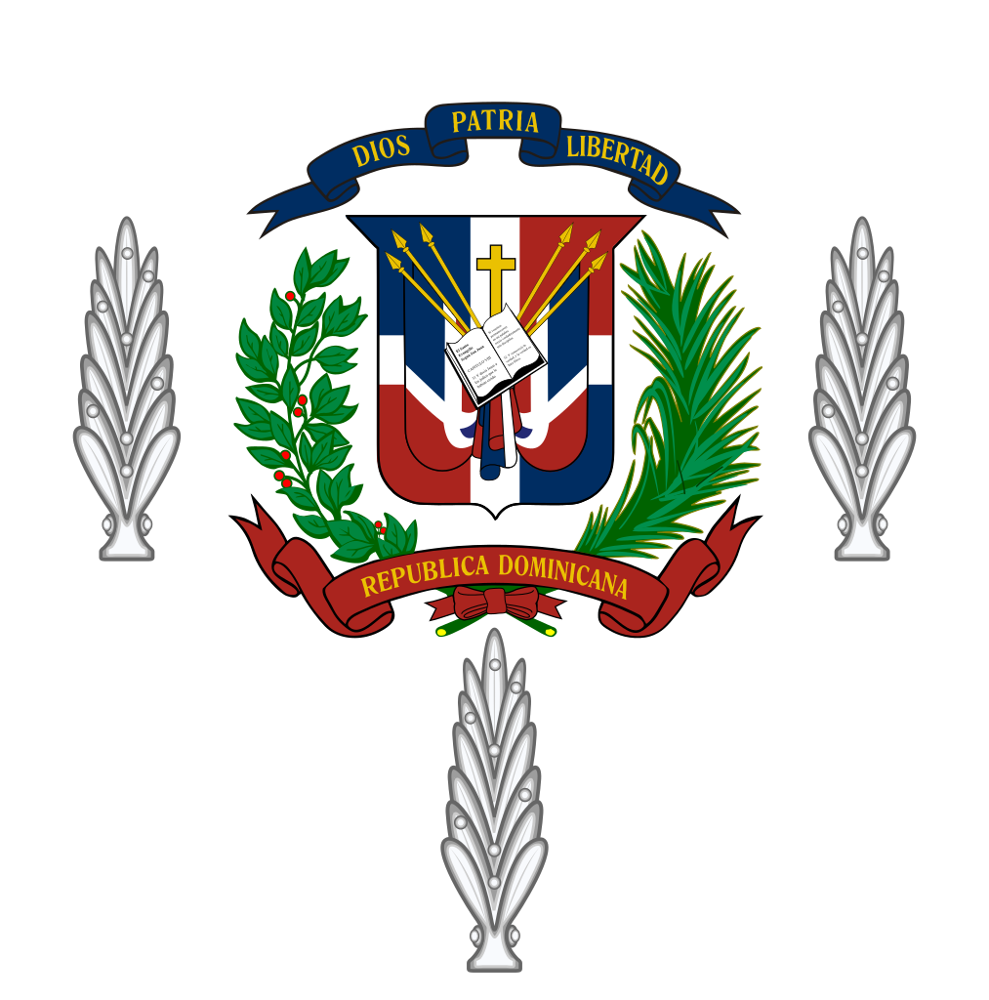Simbolizada por el Escudo Nacional en metal, llevará tres hojas de laurel color plateado, colocadas dos de ellas lateralmente de forma que toquen el centro del ramo de laurel y de palma, y la tercera hoja de laurel, colocada debajo del escudo, de forma que la punta de esta toque el centro del lazo donde se unen los ramos de laurel y palma.
Teniente Coronel
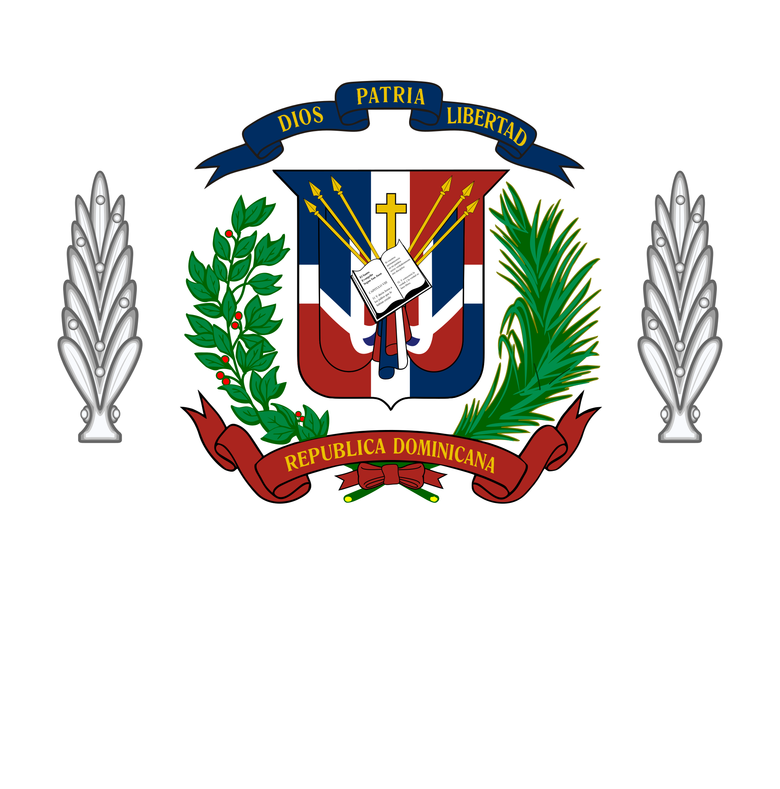Representada por el Escudo Nacional en metal, con dos hojas de laurel color plateado, colocadas lateralmente de forma que toquen el centro del ramo de laurel y palma.
Mayor
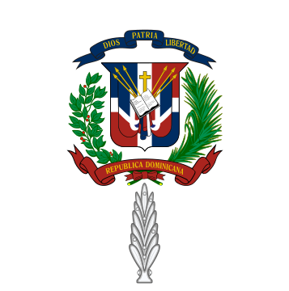Representada por el Escudo Nacional en metal, con una hoja de laurel color plateado, de forma que la punta de esta toque el centro del lazo donde se unen los ramos de laurel y palma.
Capitán
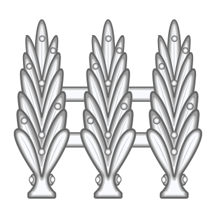Representada por tres hojas de laurel en metal, color plateado, colocadas una al lado de la otra, separadas y unidas por 2 barritas del mismo color, equidistantes una de otra.
1er. Teniente
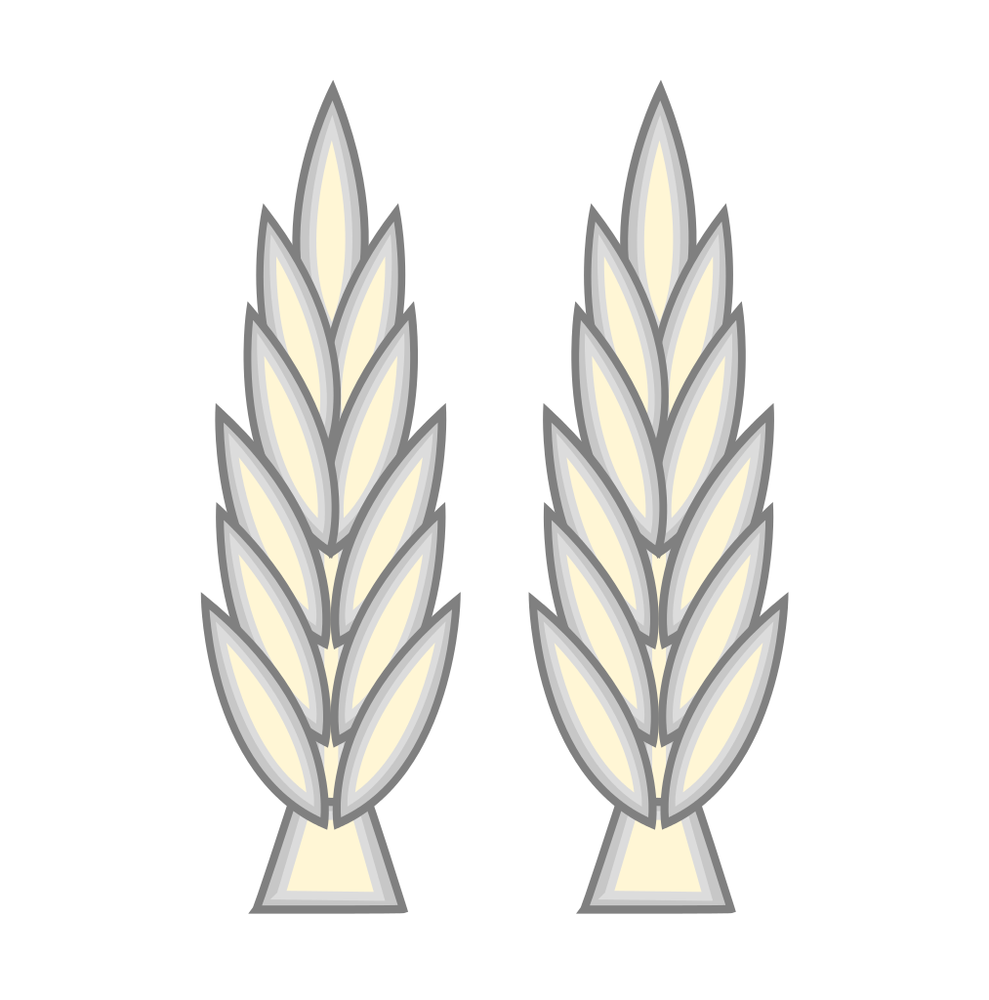Constituida por dos hojas de laurel en metal, color plateado, colocadas una al lado de la otra, separadas y unidas por 2 barritas del mismo color, equidistantes una de otra.
2do. Teniente
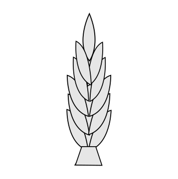Representada por una hoja de laurel de metal, color plateado.
Sargento Mayor
Simbolizada por seis galones de grados, tres en la parte superior, uno encima del otro terminando en punta, y tres en la parte inferior, uno al lado del otro, terminando en forma de arco.
Sargento
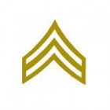Representada por tres galones de grados, terminando en punta en la parte superior, colocados uno encima del otro.
Cabo
Consiste en dos galones de grados terminando en punta en la parte superior, colocados uno encima del otro.
Raso
Este rango no tiene insignia que le represente.